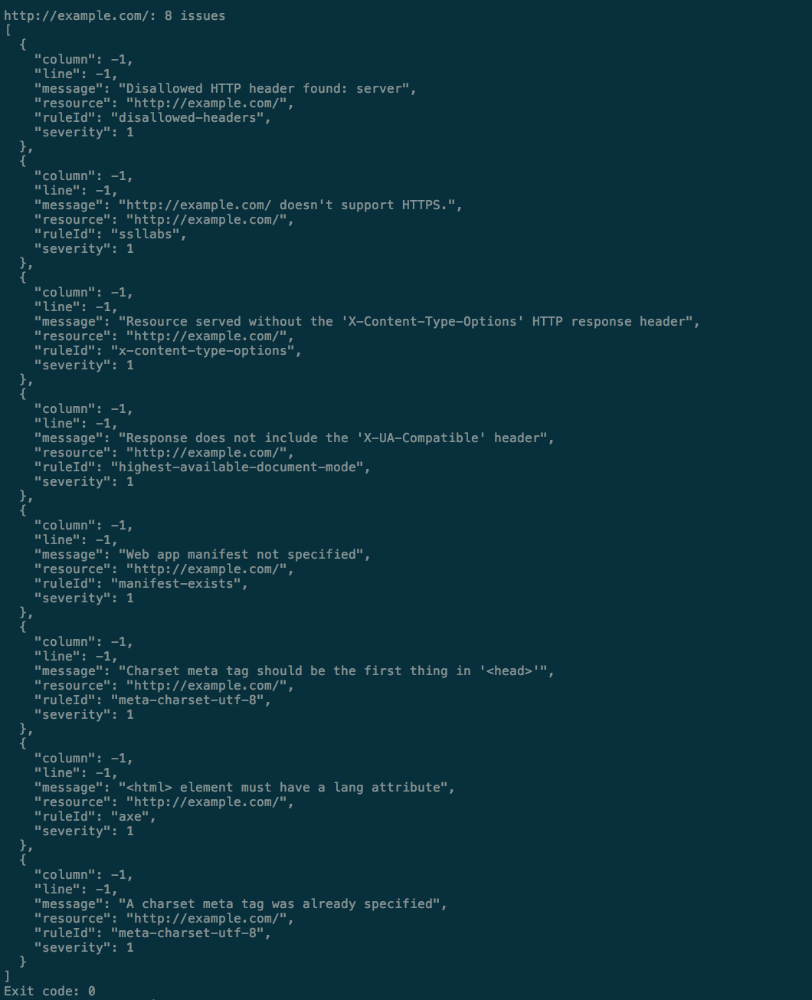
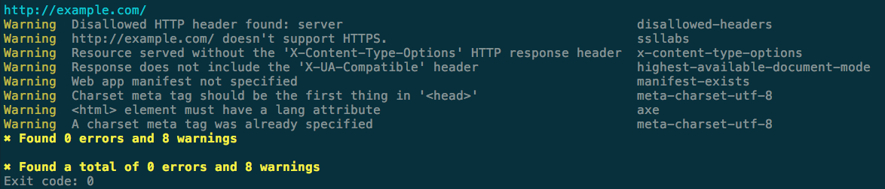
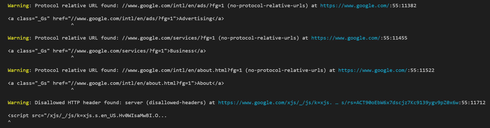
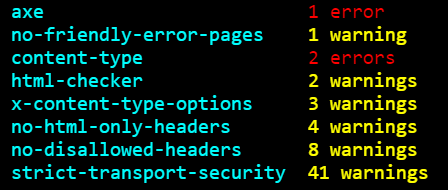

List of official formatters
List of official formatters
The current supported formatters are:
jsondoes aJSON.stringify()of the results. Output is not user friendly:

stylishprints the results in table format indicating the resource, line, and column:

codeframeshows also the code where the error was found if: Will show the piece of code where the error was found (if applicable):

summaryshows just a summary of all the warnings and errors found for all the resources:

- connectors
- formatters
- rules